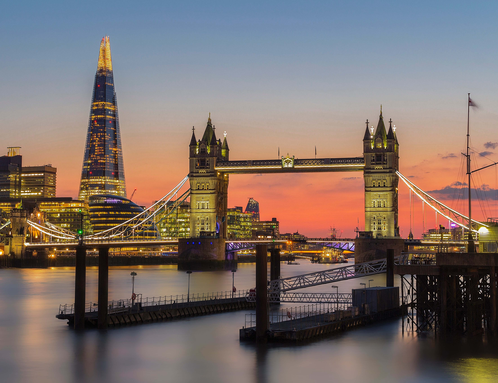

Germany
Germany is famous for being the Land of Poets and Thinkers. From vital inventions to Christmas traditions, sausages and beer, Germany is home to plenty of culture, history and quirky laws! Germany is also known for its major cities, the Black Forest, the Alps and Oktoberfest
France
Western Europe's largest city, Paris is home to some of the most famous France attractions including the Louvre, Champs-Elysées and of course the Eiffel Tower as well as Versailles Palace, Notre-Dame Cathedral, Panthéon, the Seine, Disneyland Paris and much more.
Greece
Greece is known for being the cradle of Western Civilization, the birthplace of democracy, the Olympic Games, and its ancient history and magnificent temples. Ancient temples in Greece include the Parthenon at the Acropolis in Athens and the Temple of Apollo at Delphi.

England
Sports and literature are among the United Kingdom's cultural claims to fame. Soccer, rugby, cricket, boxing, and golf were all invented in Britain. And the U.K. has produced many great writers, including William Shakespeare, Charles Dickens, and Robert Burns.